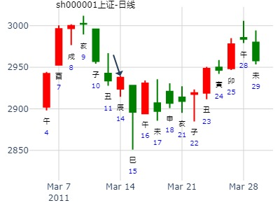
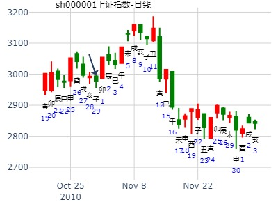

风地观，大艮卦，大房子，在海南图书馆
主帖标题: 601998，中信银行何月价位最高？
601998，中信银行，2008年价位？
公历起卦时间：2008年1月1日8时8分 (手工指定)
干支：丁亥年 壬子月 庚子日 庚辰时 （日空：辰巳）
神煞：驿马－寅 桃花－酉 日禄－申 贵人－丑，未
乾宫：风地观 乾宫：风地观
六神 伏神 本 卦 变 卦
腾蛇 妻财辛卯木 ▅▅▅▅▅ 妻财辛卯木 ▅▅▅▅▅
勾陈 兄弟壬申金 官鬼辛巳火 ▅▅▅▅▅ 官鬼辛巳火 ▅▅▅▅▅
朱雀 父母辛未土 ▅▅ ▅▅ 世 父母辛未土 ▅▅ ▅▅ 世
青龙 妻财乙卯木 ▅▅ ▅▅ 妻财乙卯木 ▅▅ ▅▅
玄武 官鬼乙巳火 ▅▅ ▅▅ 官鬼乙巳火 ▅▅ ▅▅
白虎 子孙甲子水 父母乙未土 ▅▅ ▅▅ 应 父母乙未土 ▅▅ ▅▅ 应
莫非空下伏神，一路跌？
主帖标题: 1月8日抢反弹到手的股票.下周操作思路
公历起卦时间：2016年1月8日15时15分 (手工指定)
干支：乙未年 己丑月 己丑日 壬申时 （日空：午未）
神煞：驿马－亥 桃花－午 日禄－午 贵人－子，申
乾宫：风地观
六神 伏神 本 卦
勾陈 妻财辛卯木 ▅▅▅▅▅
朱雀 兄弟壬申金 官鬼辛巳火 ▅▅▅▅▅
青龙 父母辛未土 ▅▅ ▅▅ 世
玄武 妻财乙卯木 ▅▅ ▅▅
白虎 官鬼乙巳火 ▅▅ ▅▅
腾蛇 子孙甲子水 父母乙未土 ▅▅ ▅▅ 应
QQ图片20160108150650111111111111.png (5.86 KB, 下载次数: 0)
下载附件
2016-1-8 15:16 上传
[post]哪位高手.解对此卦.送十个金币.指下周卖.买.点[/post]
占事：600362下周
时间: 2015-02-28 9时52分
干支: 乙未年戊寅月乙亥日 (旬空: 申酉 )
观静卦
玄武 ▅▅▅▅▅ 妻财卯木
白虎 兄弟申金▅▅▅▅▅ 官鬼巳火
腾蛇 ▅▅ ▅▅ 父母未土 世
勾陈 ▅▅ ▅▅ 妻财卯木
朱雀 ▅▅ ▅▅ 官鬼巳火
青龙 子孙子水▅▅ ▅▅ 父母未土 应
起卦日冲飞神。丑日兄弟入墓，涨。
寅日兄弟月破旬空被冲起，寅日冲空兄，虽然兄弟月破，照样管用. 寅与申对冲，震荡星线。
主帖标题: 周二无论沪深股指，都将下跌收阴！
出生年： 性别：男 占事：15日大盘
起卦方式：手工指定 http://www.liuyao.net 线上排盘系统
公历时间：2011年 3月14日 22时48分
农历时间：辛卯年 二月初十日亥时
干支： 辛卯年 辛卯月 戊辰日 癸亥时 (旬空：戌亥)
乾宫：风地观
六神 伏 神 【本 卦】
朱雀 妻财辛卯木 ━━━
青龙 兄弟壬申金 官鬼辛巳火 ━━━
玄武 父母辛未土 ━ ━ 世
白虎 妻财乙卯木 ━ ━
螣蛇 官鬼乙巳火 ━ ━
勾陈 子孙甲子水 父母乙未土 ━ ━ 应
子绝财泄，鬼旺莸利盘，作空卖盘占上风，大量涌出，流出资金大于流入资金，股市低迷必跌

测沪深股市今日走势 ：（3月22日）起卦方式：手动摇卦
公历时间：2016年3月22日6时8分
干 支：丙申年 辛卯月 癸卯日 乙卯时
旬 空：辰巳 午未 (辰巳) 子丑
乾宫：风地观
六神 伏 神 【本 卦】
白虎 ▄▄▄▄▄ 妻财辛卯木
螣蛇 兄弟壬申金 ▄▄▄▄▄ 官鬼辛巳火
勾陈 ▄▄ ▄▄ 父母辛未土 世
朱雀 ▄▄ ▄▄ 妻财乙卯木
青龙 ▄▄ ▄▄ 官鬼乙巳火
玄武 子孙甲子水 ▄▄ ▄▄ 父母乙未土 应
官鬼旬空。空下伏神？卯日居然不涨？
主帖标题: 每日大盘走势
4.26大盘走势?公历时间：2007年4月26日11时50分 星期四
农历时间：丁亥年三月初十午时
干支：丁亥年 甲辰月 庚寅日 壬午时 (旬空：午未)
神煞：驿马—申 桃花—卯 日禄—申 贵人—寅，午
乾宫：风地观
六神 伏 神 【本 卦】
螣蛇 ▅▅▅▅▅ 妻财辛卯木
勾陈 兄弟壬申金 ▅▅▅▅▅ 官鬼辛巳火
朱雀 ▅▅ ▅▅ 父母辛未土 世
青龙 ▅▅ ▅▅ 妻财乙卯木
玄武 ▅▅ ▅▅ 官鬼乙巳火
白虎 子孙甲子水 ▅▅ ▅▅ 父母乙未土 应
主帖标题: 4月6至4月9日大盘（周测）
公历时间：2021年4月5日20时41分
干 支：辛丑年 壬辰月 癸未日 壬戌时
旬 空：辰巳 午未 申酉 子丑
神 煞：驿马─巳 桃花─子 日禄─子 贵人─巳，卯
乾宫：风地观
白虎 ▄▄▄▄▄ 妻财辛卯木
螣蛇 兄弟壬申金 ▄▄▄▄▄ 官鬼辛巳火
勾陈 ▄▄ ▄▄ 父母辛未土 世
朱雀 ▄▄ ▄▄ 妻财乙卯木
青龙 ▄▄ ▄▄ 官鬼乙巳火
玄武 子孙甲子水 ▄▄ ▄▄ 父母乙未土 应
亥日冲飞露伏，跌？
主帖标题: 600XXX未来30天趋势，大家指点，今天下午买入。
出生：2022 年 性别：男 占事：没填
排卦：元亨利贞网六爻在线排盘系统 https://www.china95.net
公历起卦时间：2022年4月19日12时49分 (手工指定)
干支：壬寅年 甲辰月 壬寅日 丙午时 （日空：辰巳）
乾宫：风地观 乾宫：风地观
六神 伏神 本 卦 变 卦
白虎 妻财辛卯木 ▅▅▅▅▅ 妻财辛卯木 ▅▅▅▅▅
螣蛇 兄弟壬申金 官鬼辛巳火 ▅▅▅▅▅ 官鬼辛巳火 ▅▅▅▅▅
勾陈 父母辛未土 ▅▅ ▅▅ 世 父母辛未土 ▅▅ ▅▅ 世
朱雀 妻财乙卯木 ▅▅ ▅▅ 妻财乙卯木 ▅▅ ▅▅
青龙 官鬼乙巳火 ▅▅ ▅▅ 官鬼乙巳火 ▅▅ ▅▅
玄武 子孙甲子水 父母乙未土 ▅▅ ▅▅ 应 父母乙未土 ▅▅ ▅▅ 应
占事：蓝鼎控股(000971)今天抄底明天赚吗
排卦：元亨利贞网六爻在线排盘系统 http://www.china95.net
公历起卦时间：2014年5月28日12时54分 (电脑自动)
干支：甲午年 己巳月 己亥日 庚午时 （日空：辰巳）
乾宫：风地观 乾宫：风地观
六神 伏神 本 卦 变 卦
勾陈 妻财辛卯木 ▅▅▅▅▅ 妻财辛卯木 ▅▅▅▅▅
朱雀 兄弟壬申金 官鬼辛巳火 ▅▅▅▅▅ 官鬼辛巳火 ▅▅▅▅▅
青龙 父母辛未土 ▅▅ ▅▅ 世 父母辛未土 ▅▅ ▅▅ 世
玄武 妻财乙卯木 ▅▅ ▅▅ 妻财乙卯木 ▅▅ ▅▅
白虎 官鬼乙巳火 ▅▅ ▅▅ 官鬼乙巳火 ▅▅ ▅▅
腾蛇 子孙甲子水 父母乙未土 ▅▅ ▅▅ 应 父母乙未土 ▅▅ ▅▅ 应
官鬼旺空逢冲？冲实。
子日伏神值日，涨？
丑日兄弟入墓，涨？
主帖标题: 周卦例收集2020.05.11-----15上证指数
14陈平老师
公历时间：2020年5月11日5时11分
干 支：庚子年 辛巳月 甲寅日 丁卯时
旬 空：辰巳 申酉 子丑 戌亥
乾宫：风地观
六神 伏 神 【本 卦】
玄武 ▄▄▄▄▄ 妻财辛卯木
白虎 兄弟壬申金 ▄▄▄▄▄ 官鬼辛巳火
螣蛇 ▄▄ ▄▄ 父母辛未土 世
勾陈 ▄▄ ▄▄ 妻财乙卯木
朱雀 ▄▄ ▄▄ 官鬼乙巳火
青龙 子孙甲子水 ▄▄ ▄▄ 父母乙未土 应
主帖标题: 130701--130705大盘指数
公历：2013年6月28日15时49分 星期五 北京时间
干支：癸巳年 戊午月 乙丑日 甲申时
旬空：午未 子丑 戌亥 午未
午月 乙丑日 （旬空：戌亥）
乾：风地观
六神 【本 卦】
玄武 ▅▅▅▅▅ 妻财辛卯木
白虎 ▅▅▅▅▅ 官鬼辛巳火
螣蛇 ▅▅ ▅▅ 父母辛未土 世
勾陈 ▅▅ ▅▅ 妻财乙卯木
朱雀 ▅▅ ▅▅ 官鬼乙巳火
青龙 ▅▅ ▅▅ 父母乙未土 应
丑日兄弟入墓，涨？

主帖标题: 以下股票6.8哪只股票收盘涨幅最大？
sz
出生：2022 年 性别：男 占事：没填
公历起卦时间：2022年6月8日8时24分 (电脑自动)
干支：壬寅年 丙午月 壬辰日 甲辰时 （日空：午未）
神煞：驿马－寅 桃花－酉 日禄－亥 贵人－卯，巳
乾宫：风地观 乾宫：风地观
六神 伏神 本 卦 变 卦
白虎 妻财辛卯木 ▅▅▅▅▅ 妻财辛卯木 ▅▅▅▅▅
螣蛇 兄弟壬申金 官鬼辛巳火 ▅▅▅▅▅ 官鬼辛巳火 ▅▅▅▅▅
勾陈 父母辛未土 ▅▅ ▅▅ 世 父母辛未土 ▅▅ ▅▅ 世
朱雀 妻财乙卯木 ▅▅ ▅▅ 妻财乙卯木 ▅▅ ▅▅
青龙 官鬼乙巳火 ▅▅ ▅▅ 官鬼乙巳火 ▅▅ ▅▅
玄武 子孙甲子水 父母乙未土 ▅▅ ▅▅ 应 父母乙未土 ▅▅ ▅▅ 应
《周易》——风地观 巽上坤下
观：盥而不荐，有孚□若。彖曰：大观在上，顺而巽，中正以观天下。观，盥而不荐，有孚□若，下观而化也。 观天之神道，而四时不忒， 圣人以神道设教，而天下服矣。象曰：风行地上，观；先王以省方，观民设教。
上九：观其生，君子无咎。象曰：观其生，志未平也。
九五：观我生，君子无咎。象曰：观我生，观民也。
六四：观国之光，利用宾于王。象曰：观国之光，尚宾也。
六三：观我生，进退。象曰：观我生，进退；未失道也。
六二：窥观，利女贞。象曰：窥观女贞，亦可丑也。
初六：童观，小人无咎，君子吝。象曰：初六童观，小人道也。
出生：没填 年 性别：男 占事：8月25-28日上证走势
干支：乙未年 甲申月 壬申日 己酉时 （日空：戌亥）
神煞：驿马－寅 桃花－酉 日禄－亥 贵人－卯，巳
乾宫：风地观 乾宫：风地观
六神 伏神 本 卦 变 卦
白虎 妻财辛卯木 ▅▅▅▅▅ 妻财辛卯木 ▅▅▅▅▅
腾蛇 兄弟壬申金 官鬼辛巳火 ▅▅▅▅▅ 官鬼辛巳火 ▅▅▅▅▅
勾陈 父母辛未土 ▅▅ ▅▅ 世 父母辛未土 ▅▅ ▅▅ 世
朱雀 妻财乙卯木 ▅▅ ▅▅ 妻财乙卯木 ▅▅ ▅▅
青龙 官鬼乙巳火 ▅▅ ▅▅ 官鬼乙巳火 ▅▅ ▅▅
玄武 子孙甲子水 父母乙未土 ▅▅ ▅▅ 应 父母乙未土 ▅▅ ▅▅ 应
反馈：28日收盘3232点，涨22点；跌跌涨涨
占事：8月25-28日上证走势
时间: 2015-08-24
干支: 乙未年甲申月壬申日 (旬空: 戌亥 )
干支：乙未年 甲申月 壬申日 己酉时 （日空：戌亥）
神煞：驿马－寅 桃花－酉 日禄－亥 贵人－卯，巳
乾宫：风地观 乾宫：风地观
六神 伏神 本 卦 变 卦
白虎 妻财辛卯木 ▅▅▅▅▅ 妻财辛卯木 ▅▅▅▅▅
腾蛇 兄弟壬申金 官鬼辛巳火 ▅▅▅▅▅ 官鬼辛巳火 ▅▅▅▅▅
勾陈 父母辛未土 ▅▅ ▅▅ 世 父母辛未土 ▅▅ ▅▅ 世
朱雀 妻财乙卯木 ▅▅ ▅▅ 妻财乙卯木 ▅▅ ▅▅
青龙 官鬼乙巳火 ▅▅ ▅▅ 官鬼乙巳火 ▅▅ ▅▅
玄武 子孙甲子水 父母乙未土 ▅▅ ▅▅ 应 父母乙未土 ▅▅ ▅▅ 应
旬尾，申酉过后即旬空。

占事：申月上证股市大盘
时间: 2022-08-07 19时27分
干支: 壬寅年戊申月壬辰日 (旬空: 午未 )
观静卦
白虎 ▅▅▅▅▅ 妻财卯木
腾蛇 兄弟申金▅▅▅▅▅ 官鬼巳火
勾陈 ▅▅ ▅▅ 父母未土 世
朱雀 ▅▅ ▅▅ 妻财卯木
青龙 ▅▅ ▅▅ 官鬼巳火
玄武 子孙子水▅▅ ▅▅ 父母未土 应

宇通客车到8月底--金玉堂
时间: 2022-08-15 11时15分
干支: 壬寅年戊申月庚子日 (旬空: 辰巳 )
观静卦
腾蛇 ▅▅▅▅▅ 妻财卯木
勾陈 兄弟申金▅▅▅▅▅ 官鬼巳火
朱雀 ▅▅ ▅▅ 父母未土 世
青龙 ▅▅ ▅▅ 妻财卯木
玄武 ▅▅ ▅▅ 官鬼巳火
白虎 子孙子水▅▅ ▅▅ 父母未土 应
2022-08-15
观静卦。宇通客车8月2周卦。
主帖标题: 9月10-14日大盘涨跌卦
占事：9月10-14日大盘涨跌？
排卦：元亨利贞网六爻在线排盘系统 http://www.china95.net
公历起卦时间：2012年9月7日15时55分 (手工指定)
干支：壬辰年 己酉月 辛未日 丙申时 （日空：戌亥）
乾宫：风地观
六神 伏神 本 卦
腾蛇 妻财辛卯木 ▅▅▅▅▅
勾陈 兄弟壬申金 官鬼辛巳火 ▅▅▅▅▅
朱雀 父母辛未土 ▅▅ ▅▅ 世
青龙 妻财乙卯木 ▅▅ ▅▅
玄武 官鬼乙巳火 ▅▅ ▅▅
白虎 子孙甲子水 父母乙未土 ▅▅ ▅▅ 应
主帖标题: 个股 卦象不佳
公历：2016年9月7日0时53分，星期三。
干支：丙申年 丙申月 壬辰日 庚子时 (卦身：酉)
主变卦 风地观(乾宫) [空亡:午、未]
白虎 ▅▅▅▅▅ 妻财辛卯木
螣蛇 兄弟壬申金 ▅▅▅▅▅ 官鬼辛巳火
勾陈 ▅▅ ▅▅ 父母辛未土 世
朱雀 ▅▅ ▅▅ 妻财乙卯木
青龙 ▅▅ ▅▅ 官鬼乙巳火
玄武 子孙甲子水 ▅▅ ▅▅ 父母乙未土 应
出生年:1971 性别：女 水易缘
占事：000683 - 9月19-30日
起卦方式：手动摇卦
公历时间：2016年9月14日11时2分
干 支：丙申年 丁酉月 己亥日 庚午时
旬 空：辰巳 辰巳 辰巳 戌亥
乾宫：风地观
六神 伏 神 【本 卦】
勾陈 ▄▄▄▄▄ 妻财辛卯木
朱雀 兄弟壬申金 ▄▄▄▄▄ 官鬼辛巳火
青龙 ▄▄ ▄▄ 父母辛未土 世
玄武 ▄▄ ▄▄ 妻财乙卯木
白虎 ▄▄ ▄▄ 官鬼乙巳火
螣蛇 子孙甲子水 ▄▄ ▄▄ 父母乙未土 应
主帖标题: 2010年11月大盘涨跌卦
占事：2010年11月大盘涨跌？
公历时间：2010年10月29日16时45分 星期五
农历时间：庚寅年九月廿二申时
干支：庚寅年 丙戌月 壬子日 戊申时 (旬空：寅卯)
神煞：驿马—寅 桃花—酉 日禄—亥 贵人—卯，巳
乾宫：风地观
六神 伏 神 【本 卦】
白虎 ▅▅▅▅▅ 妻财辛卯木
螣蛇 兄弟壬申金 ▅▅▅▅▅ 官鬼辛巳火
勾陈 ▅▅ ▅▅ 父母辛未土 世
朱雀 ▅▅ ▅▅ 妻财乙卯木
青龙 ▅▅ ▅▅ 官鬼乙巳火
玄武 子孙甲子水 ▅▅ ▅▅ 父母乙未土 应

亥月本是生财，结果 11月涨几天就开跌。
主帖标题: 求测事情：300261,今天走势
求测事情：300261
公历：2020-10-14 07:06
庚子年丙戌月庚寅日庚辰时
神煞：驿马-申 桃花-卯 日禄-申 贵人-寅,午
风地观(乾宫 ) 艮(艮宫 )
▄▄▄▄▄辛卯木妻财 滕蛇 世▄▄▄▄▄丙寅木妻财
▄▄▄▄▄辛巳火官鬼 勾陈 ○─→ ▄▄ ▄▄丙子水子孙
世▄▄ ▄▄辛未土父母 朱雀 ▄▄ ▄▄丙戌土父母
▄▄ ▄▄乙卯木妻财 青龙 ×─→应▄▄▄▄▄丙申金兄弟
▄▄ ▄▄乙巳火官鬼 玄武 ▄▄ ▄▄丙午火官鬼
应▄▄ ▄▄乙未土父母 白虎 ▄▄ ▄▄丙辰土父母
八月 申、酉金旺；亥、子水为相；其余休囚；寅、卯木最弱。

主帖标题: 手摇 10月19日周卦：银行板块
公历：2020年10月17日16时3分，星期六。
干支：庚子年 丙戌月 癸巳日 庚申时 (卦身：酉)
主变卦 风地观(乾宫) [空亡:午、未]
白虎 ▅▅▅▅▅ 妻财辛卯木
螣蛇 兄弟壬申金 ▅▅▅▅▅ 官鬼辛巳火
勾陈 ▅▅ ▅▅ 父母辛未土 世
朱雀 ▅▅ ▅▅ 妻财乙卯木
青龙 ▅▅ ▅▅ 官鬼乙巳火
玄武 子孙甲子水 ▅▅ ▅▅ 父母乙未土 应
起卦方式：手动摇卦 易情股恋
公历时间：2015年11月15日5时43分
干 支：乙未年 丁亥月 乙未日 己卯时
旬 空：辰巳 午未 (辰巳) 申酉
乾宫：风地观
六神 伏 神 【本 卦】
玄武 ▄▄▄▄▄ 妻财辛卯木
白虎 兄弟壬申金 ▄▄▄▄▄ 官鬼辛巳火
螣蛇 ▄▄ ▄▄ 父母辛未土 世
勾陈 ▄▄ ▄▄ 妻财乙卯木
朱雀 ▄▄ ▄▄ 官鬼乙巳火
青龙 子孙甲子水 ▄▄ ▄▄ 父母乙未土 应
空下伏神，酉日冲卯暗动，但因为酉值日是兄弟冲，所以冲高回落。
（几个观卦在卯旺时逢酉冲都是上影线）
600362下周，风地观静卦。月破旬冲被冲起
风地观，2011.12.26－2012.6.30，沪深300半年走势（铜钱）
排卦：.六爻在线排盘系统
公历起卦时间：2011年12月24日23时26分 (手工指定)
干支：辛卯年 庚子月 甲寅日 甲子时 （日空：子丑）
神煞：驿马－申 桃花－卯 日禄－寅 贵人－丑，未
乾宫：风地观 乾宫：风地观
六神 伏神 本 卦
玄武 妻财辛卯木 ▅▅▅▅▅
白虎 兄弟壬申金 官鬼辛巳火 ▅▅▅▅▅
腾蛇 父母辛未土 ▅▅ ▅▅ 世
勾陈 妻财乙卯木 ▅▅ ▅▅
朱雀 官鬼乙巳火 ▅▅ ▅▅
青龙 子孙甲子水 父母乙未土 ▅▅ ▅▅ 应
子孙空而且伏。
卯木在六爻，春天己是高位了。
午月（如果以子月定旺衰的话，则是冲子孙暗动要涨，但实际是跌，证明仍是以辰年定子水旺衰，实际是冲月破，大跌）
子月子孙出空出伏，大涨。
丑月，冲飞露伏大涨。